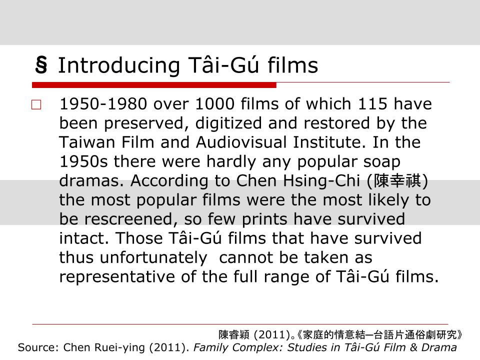
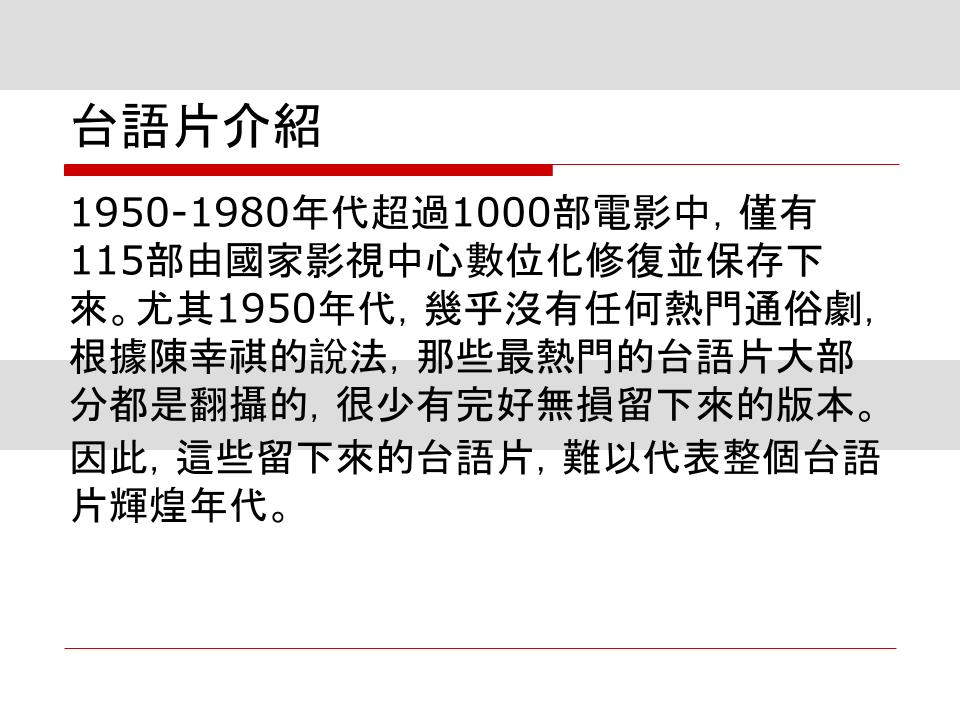
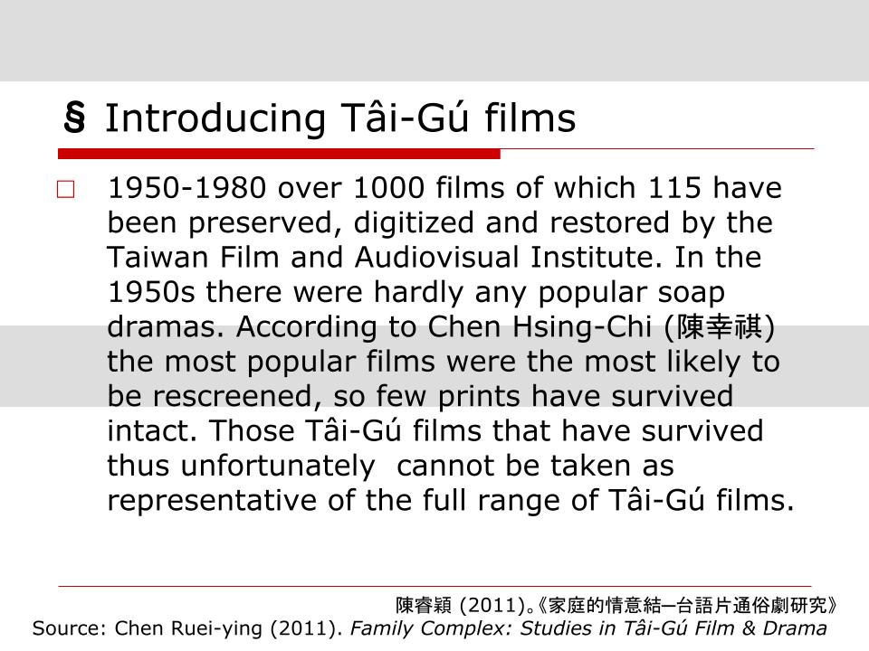
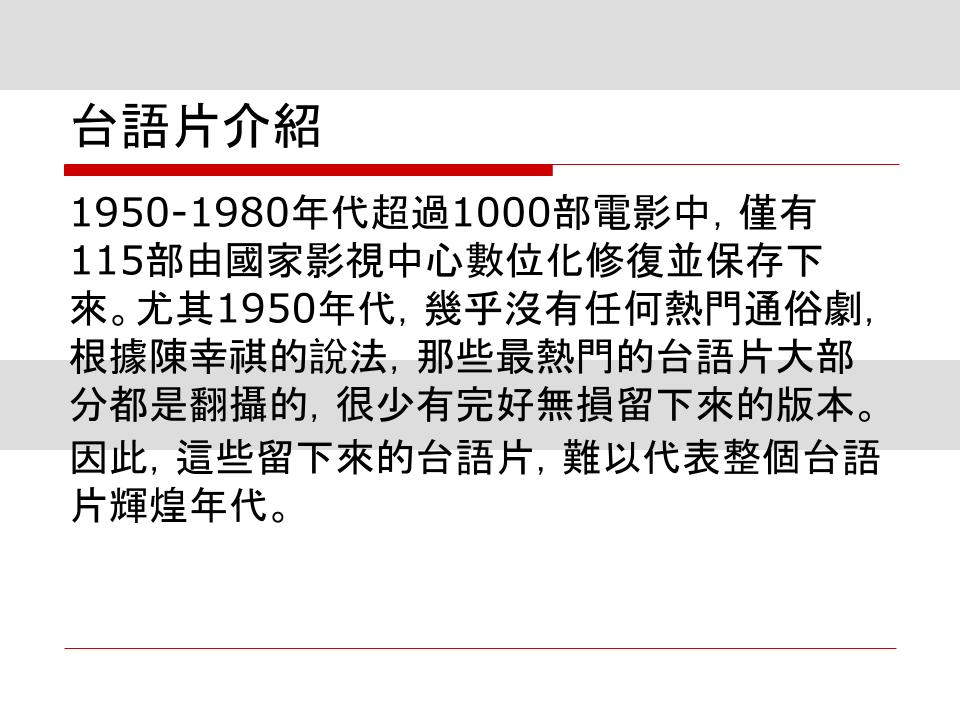

.sticky-top to fix something after scrolling to the top.
行政院在2018年提出「2030雙語國家政策發展藍圖」，欲在2030年前透過強化英語教育，提升臺灣競爭力、厚植國人英語力，並帶動全民學習英語的雙語國家。教育部也隨之在2021年9月啟動「大專校院學生雙語化學習計畫」，希望增加高教端「全英語授課」（English
as a Medium of Instruction，簡稱EMI）比例，欲整體提升高教國際競爭力。
高教人才培育成功與否，影響國家未來發展尤甚。雙語政策似乎是增進高教師生英語力的一帖良方，卻已有諸多專家學者預警，在師資教學人力、EMI課程設計、學生英語程度等各方面都未有周延規劃前，操之過急的雙語政策，恐如同洪水猛獸嚴重威脅高等教育現有品質。如今政策實施已逾一年，令人好奇教學現場如何了呢？
 



英文版簡報是EMI課程「台灣流行文化」的上課PPT，
而右方的華文版簡報是我們提供的翻譯。
進下一張簡報之前，我們會問兩個是非題，
請你先從英文版簡報尋找解答。
是非題：
1.1950到1980年代，多數的熱門通俗劇都有被保存下來。
2.保存下來的台語電影，雖然數量少，但都屬於最具代表性的。
答案是兩者皆非！
再看一次華文版，會不會比較容易理解呢？

這裡可以放小結
為讓各大學在推動EMI教學上有可供學習的典範對象，教育部挹注具國際競爭力之大學轉型為「標竿學校及學院」，重點培育雙語專業人才，2021年已核定4所標竿學校（臺灣大學、臺灣師範大學、成功大學、中山大學）蓄勢待發。
投入大量經費資源，雙語標竿學校將完成什麼政策目標？2030年前，雙語標竿學校要讓半數學生自大二起的英文能力達B2以上，且至少半數大二及碩一學生其修習學分有一半以上為EMI課程，具體提升學生英語能力。
以臺大及臺師大為例，臺大在被核定為標竿學校後的第一次教務會議提出，「鼓勵各系新增二年級上下學期各二門系必修EMI課程」，像是臺大社會學系近三年上學期EMI課程占比就從
0％一路飆升至15％，臺大全校EMI課程比例也達到近10％；臺師大也不落人後，在教務會議上要求各系所研擬至少18學分EMI課程規劃，而今臺師大全校EMI課程比例已超車臺大成長至15％。
與此同時，在亮麗數字的背後，來自EMI教學現場的聲音，又將讓我們瞭解什麼高教雙語教育故事？
這裡會是翻卡CSS

為提升臺灣競爭力、厚植國人英語力，高教雙語政策推動至今已逾一年，各大學配合政策目標總動員，讓全校師生集體投入這場全球化下的英語軍備競賽，外國學生也得利於雙語教學的環境，教室裡的學生面貌日趨多元、「國際化」有成。
然而，當我們知悉教學現場各殊異想法後，再次攤開雙語教育政策檢視，除了政策績效目標之外，難見其他實質政策內容。不完備的政策讓執行責任落在第一線的學校、教師及學生身上，教育部往往是在得到教學現場反映後才彈性調整政策績效目標。
各校百花齊放的雙語教育資源，仍不脫政策核心價值－「國際競爭力」。但透過英語追求競爭力真的是社會普遍共識嗎？追求競爭力的同時，是否無意間排除了些什麼？難以適應雙語教育的學生其學習權益是否被打折扣？雙語政策諸多影響猶待關注，方能讓後續推動，不只能顧及「雙語」，還有「教育」。
林宣佑、沈嘉偉、饒辰書
撰稿：沈嘉偉
美術：林宣佑
網頁：饒辰書
最後編輯：2022/12